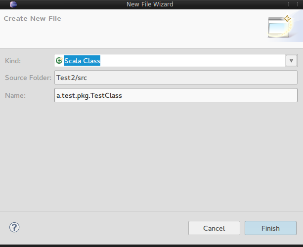
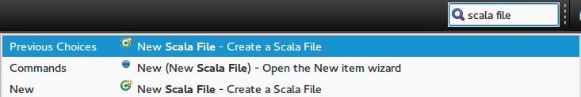
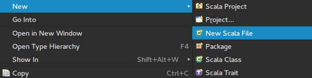
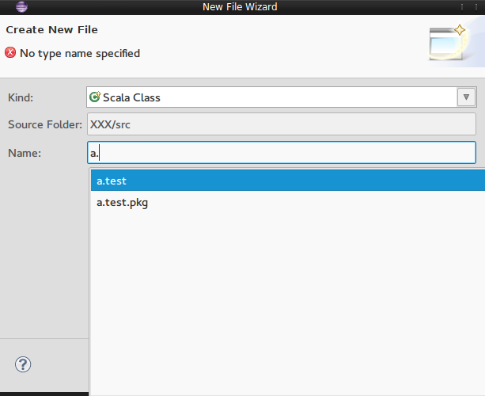
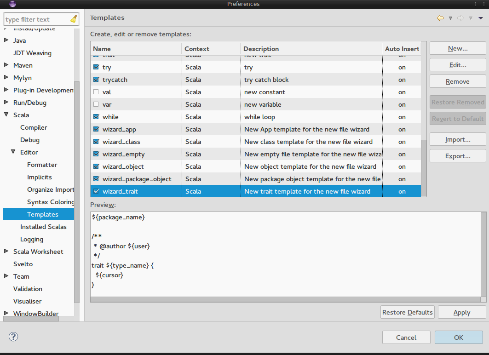

Wizards new
Scala IDE 4 includes a new wizard, which is a simplified version compared to the old wizards. It basically looks like this:
There are two ways to open this new wizard. The easiest one is to press Ctrl+3 to open the quick access search field. You can find the new wizard under the name “New Scala File”:
The second way is to navigate to the “New” menu and select “New Scala File”:
What functionality is provided?
You have the possibility to select the kind of file (for example a Scala Class), the source folder of a project and of course the fully qualified name of the file.
For example, if you want to create a Scala type in a package you have to prepend the package names separated by dots to the type name. If you don’t specify any package name the file will be created in the default package of the selected source folder.
While you type you get code completion support. Whenever you type a dot the wizard will automatically show you a completion popup for available package names. In case you don’t want to wait until the wizard opens the completion popup for you, you can explicitly ask for code completion by pressing Ctrl+Space.
The wizard is made to be controlled easily with your keyboard, which means that you can reach all input fields without touching the mouse. You can rotate through the list of file kinds by pressing the up or down keys of your keyboard while the file name field is focused and with Ctrl+Tab you can move the focus to the source folder field. By pressing Enter when the source folder field is selected you get a dialog that shows you all available projects and their source folders. After you selected one of them, the focus is automatically moved back to the file name field.
Configurable templates
Once you press Finish on the wizard, it will create a file and insert content based on a template. For example if you select the kind Scala Trait and enter the name a.test.pkg.TestClass the following file content will be created by default:
package a.test.pkg
/**
* @author nickname
*/
trait TestClass {
^
}
where ^ denotes the position of the cursor. If you don’t like the automatically created content you can easily change it by navigating to Window → Preferences → Scala → Editor → Templates and search for template names that start with wizard_. The Scala Trait type for example will choose the wizard_trait template.
All the other features of the old wizards like the automatic adding of a super type are no longer supported. The design goal of the new wizard is to send users as fast as possible back to the editor where they can do whatever they want.
Developer support
One further important property of the new wizard is that it can be extended by users of the IDE with their own file kinds. Basically this means that once a template and the corresponding configuration is provided, the wizard will automatically find it and provide it as a selection option in the “kind” section. However, this requires that an OSGi bundle is provided and is therefore not as straightforward as just changing the content of a template in the preferences. If it is your interest to provide such an OSGi bundle, you should take a look to the developer documentation of the wizard.


{kind=link}
{kind=link}